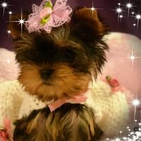

Traditional Yorkshire Terrier Puppies

We have beautiful Traditional Yorkshire Terrier puppies available now!
Our breeding program includes exceptional bloodlines with select international imports from Poland, Russia, and Turkey. We focus on producing healthy, beautiful puppies with excellent temperaments, outstanding quality, and the classic Baby Doll Face. Our Yorkie puppies are raised in our home with love and plenty of individual attention. They are well-socialized, pre-spoiled, and ready to become cherished members of their new families.
Pictures are available upon request.
If you are interested in adding one of our adorable Traditional Yorkshire Terriers to your family, please contact us for more information.